四核CPU肯定比双核CPU强吗？
-
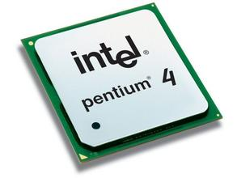
答案是——否定的
四核CPU不一定比双核CPU强，甚至有些四核CPU比双核CPU弱不少。
那为什么AMD公司的四核比不过intel的双核呢？
A6，A8，A10都是属于四核四线程的CPU，简单说，核心/线程就是“工人”，几核就是几个工 人，他们互相分工合作。而工人工作不仅要看人数，更要看工人本身的熟练度，英特尔用的“工 人”比AMD的“工人”更加熟练，也就是英特尔的CPU在核心架构上技术更加先进。英特尔有超线 程技术，可模拟出线程。这也是为什么电脑城商家会说i3也是四核，只是因为i3会模拟四核， 并非真四核。从“工人”角度来通俗理解就是，英特尔的工人1个能做2个人的活，而且做得更 好。
你只要记住：AMD的核心性能比英特尔的要差，AMD四核多数情况是比不过英特尔双核 四线程的。
【警告】：如果选购AMD处理器的电脑，务必事先上网查询好待选电脑的大致价位，防止商家以四核电脑为噱头牟取暴利！
笔记本散热垫对笔记本散热有没有帮助？
-
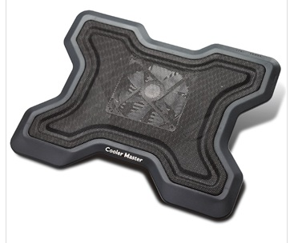
答案是——肯定的
但是！常见的笔记本散热垫和拿瓶盖把笔记本垫高相比，强不了多少。
什么是笔记本散热垫？如配图
夏天可以不用散热垫吗？
普通使用可以不加，但是在玩游戏、作图时最好能有一个，因为电脑使用时间一长，散热 器难免会积累棉絮等灰尘，热风无法有效排出，此时可以选择清灰，也可以选择使用散热 垫辅助散热。
散热器好用吗？有强力的散热器吗？
散热垫是我散热能力其实并不强，真正强力的散热器是笔记本专用抽风机，直接从散热口 处抽出热风。
抽风机会对电脑风扇造成轻微损耗，不玩游戏的时候要记得关闭抽风机。
有实惠点的散热器吗？
有，建议取用四个高低一致的，比较稳妥的（摩擦力大的）物体（比如四块大 橡皮擦），垫在笔记本的四角，可以达到不错的导风散热效果。
电脑太热会坏掉吗？
基本不会，电脑芯片的耐高温能力非常强（CPU和显卡尤为如此），核心部件CPU在高温下 （90度左右）会限制性能来降低发热，而电脑部件中比较不耐热的是机械硬盘，要把温度控 制在60度以下。
【注】：如今的电脑都有高温保护功能，CPU在工作温度太高时（100度以上），会启动高 温断电保护。
如何根治电脑散热差的毛病？
拆机清理散热器灰尘效果立竿见影，但是真要让电脑像新买时一样的话，需要更换电脑散 热硅脂，还要换掉老旧的导热管等，这都是考验动手能力的技术活。
最近不断出现尝试自己换硅脂然后悲剧的事件，不建议小白参考。
高端品牌的笔记本都很好用吗？
-
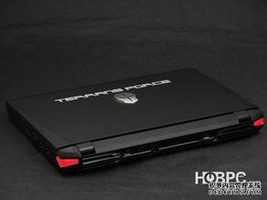
答案是——否定的
越是高端的笔记本，越是针对特定的需求，一定要按需购买高端笔记本，否则效果还不如 买一台低价位的全能本。
高端笔记本可以从价格方面一眼看出，例如戴尔Alienware系列，苹果Retina Macbook pro系列，惠普elitebook系列，Thinkpad W系列以及各种牌的Ultrabook 等，这些电脑大多都价格上万，有的甚至达到20万人民币的夸张价位（Terrans Force P57）
如何快速分辨高端电脑是否合适自己？
很简单，高端笔记本要么是专业人士工作用本、要么都是追求极致用户的选择。
比如戴尔Precision、惠普Elitebook、Thinkpad W等，都是专业工作站。
而宏碁、联想等大众品牌的Ultrabook，都是极致轻薄新一代笔记本。
而戴尔Alienware、华硕ROG等，都是高端游戏本。
显而易见，以上高端笔记本要么工作专用，要么极致轻薄（性能低），要么极致性能（便 携低），几乎没有哪个高端品牌的笔记本同时具备看电影、游戏、散热好、便携、专业工 作能力。
预算充足，如何才能买到各方面都比较好的笔记本？
有钱也买不到，前面已经说了，性能、散热、便携等要求绝不可能皆做到八面玲珑，价格 越高的笔记本，在一定方面做得越极致。
商务本有高端的吗？
日本富士通公司和联想Thinkpad生产高端商务本，真正的商务本在硬盘数据保护上比较 下功夫，但是随着如今商务人士更倾向轻薄便携，所以现在此类商务本越来越少，大家可 以参考Thinkpad T系列、X系列。
苹果笔记本怎么样？
苹果Macbook是一个比较特殊的笔记本电脑，因为他采用了其它电脑并没有的OS X操作系 统（其余笔记本使用Windows操作系统）
Pro系列真正适合的是平面设计专业，影片后期剪辑等，一定程度上也算半个工作站。
Air系列是Ultrabook超极本的前身，顾名思义走的是极致轻薄路线，但是使用OS X要付 出一定的学习成本，除非对其外观特别喜爱，否则个人建议选购采用Windows系统的超极 本更加方便。
高端品牌笔记本又有哪些需要注意的呢？
1，高端品牌笔记本没有性价比
2，高端品牌笔记本也会出现做工、硬件故障等问题
3，高端品牌笔记本并不保值，也会随着时间的推移而过时。
4，对于学生党和刚工作的普通人，高端品牌笔记本并不实惠也不必要，攒钱硬撑买笔 记本是很不明智的，除非你是笔记本发烧友
有没有性价比高的高端笔记本呢？
有，准系统笔记本、MSI、Terrans Force生产的笔记本因为品牌知名度不高以及售后较少的问题，这些性能强劲的游戏型笔记本（工作站也有少数）都是高端且实惠的性能型笔记本，大家可以去准系统吧参考。
笔记本电池不用时需要取下来吗？
-
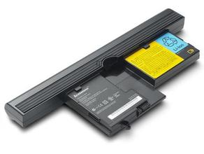
答案是——否定的
接通电源正常实用的情况下，是不用拔出笔记本电池的。
笔记本电池通常安置在笔记本的后方，在你不接通电源使用笔记本的时候，负责保持笔记本的正常运行。 而如今新出的超极本电池有一部分在腕托附近，其内部大部分为电池，主板集成度很高。
。不拔出电池直接接通电源使用笔记本电脑，会对电池造成损害吗？
几乎没有影响，因为笔记本电池在充满电之后就不会再接受任何电量注入，电量将全部直接转向笔记本的电源供应系统。这就说明电池基本没有在工作了，所以不必担心长期装着电池会对电池照成损害。
拔出电池使用笔记本会对电脑造成损害吗？
只要没有强迫症，就别拔出电池使用，因为如果突然断电，电池可以作为一个缓冲应急设备，此时如果没有电池为你保驾护航，那突然断电可能会对主板或其它部件造成损伤。
不要 充满电后拔下电源，没电后在插上电源 ，如此循环使用会大大降低电池寿命。
长期不用笔记本电脑，需要取出电池吗？
需要取出，但是不要充满，将电量充至80%左右，取出后妥善保管，防止受潮。
我的电池从来没拔出过，为何损耗特别厉害？
电池的损耗和使用温度有一定的关系，在高负荷使用状态下，高温的影响可能会导致笔记本电池的损耗。
电池的损耗和笔记本电脑本身的电源管理程序有关，拥有第三方管理软件的笔记本电脑一般都有不错的电池保护解决方案。
笔记本电池是一个消耗品，而且价值并非十分昂贵，更换一块新电池也非常简便。 所以与其过分在意电池损耗，还不如插上电池，确保自己工作时数据的安全。
固态硬盘比普通硬盘好吗？
-
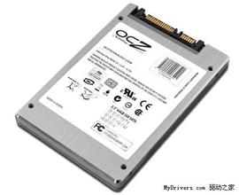
答案是——肯定的，但是！
固态硬盘虽然速度快，但是价格高、同价位买到的容量比普通硬盘小很多，并不适合用来长期存放非常多的数据。
固态硬盘（Solid State Disk）简称SSD，其使用方式、外形尺寸上与普通硬盘完全一致（如果需要也能做得更小），具有存储\读取速度极快、耐高低温、防震抗衰等优点。
使用固态硬盘有什么基本的优势和劣势？
优势——开机速度快、打开软件快、游戏读取地图快、低功耗、发热少、无噪音、无震动、防震抗摔、耐高温。
劣势——价格很贵，擦写次数没普通硬盘多，不适合作为下载盘和资料收藏盘
常见的固态硬盘有那些基本的品牌和尺寸？
2.5寸——三星840、840 pro、镁光m4、浦科特m5p、intel 520、OCZ V4等
1.8寸——建兴m3m、镁光m4 msata版等
三星840是一款比较实惠的SSD，个人推荐给初次接触SSD的用户。 还有一些耳熟能详的U盘、内存品牌也做SSD，但其SSD却做得一般，例如金士顿、闪迪Sandisk、威刚等，虽然只是品牌中的个别型号不实惠，但是为了方便区分，建议初学者谨慎购买。
普通硬盘有速度快的吗？
普通笔记本硬盘分为5400转和7200转，理论上越快越好，但是快的硬盘温度也略高，性能提升有限，所以并没必要刻意选择高转速硬盘。
我的笔记本可以更换固态硬盘吗？
任何一台使用普通硬盘的笔记本都可以更换固态硬盘，只需要把原来的硬盘拆掉，把固态硬盘换装上去就可以了。如果是加装固态硬盘组成双硬盘，则不同机型有不同的组法，请善用百度搜索找到适合自己机器的SSD安装方法。
跑分越高的笔记本是不是就越厉害？
-
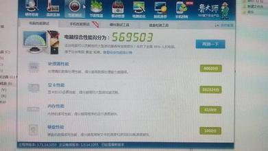
答案是——肯定的，但是！
衡量一台笔记本的好坏千万不能直接看跑分，还得看外观、重量、续航、散热能力、用料、工艺等一系列关键要素，总的来说笔记本电脑是一个集成度很高的整体，单从性能体现问题非常的有限。
为了方便衡量硬件的好坏（例如CPU、显卡），部分软件公司推出了跑分软件来量化电脑硬件的性能，国内比较出名的有鲁大师，真正专业的有3Dmark、Fritz Chess Benchmark（象棋）等。
买来的性能级电脑，跑分并没有想象中的高，是不是我被骗了？
如果确定型号和配置是想买的，那么跑分不高并不说明你的电脑性能不好，也有可能是因为电脑驱动没安装到位，驱动问题大家可以百度一下了解详细情况。
360硬件大师（鲁大师）的跑分能不能用作参考呢？
参考价值非常低，平时大家没事跑着玩可以，要真正以跑分为依据，鲁大师是完全没有说服力的，拿鲁大师跑分来秀电脑配置也是非常业余的举动，建议大家拿鲁大师纯作为一个检测软件，不要拿鲁大师的跑分来作为参考。
有哪些比较知名并且好用的跑分软件呢？ CPU可以用上面提到的象棋软件测试,显卡可以用3Dmark测试,内存可以考虑用AIDA64测试,硬盘建议用AS SSD BENCHMARK测试,这些软件百度都能搜索并下载到。
硬件的能力高低和相关驱动程序关系很大，建议大家在更新完系统（重装、或者新买电脑）后，赶紧更新好用的硬件驱动（显卡驱动很重要），这样才能发挥性能型笔记本的最大优势！
商务本适合学生或者家用吗？
-
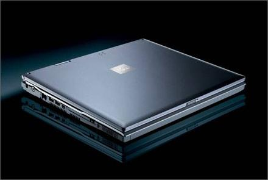
答案是——肯定的，但是！
真正的商务本通常会附带一系列电脑数据保护、备份措施和良好的现场演示能力，而配置大多无亮点，尤其是显卡一般配备的不是很高的型号，对于需要在宿舍各种【玩游戏】的这一类学生用户来说不甚合适。
正统的商务型笔记本一般没有很强的游戏和影音娱乐性能，但是通常会使用比同价位笔记本稍好的外壳材料，以及更为完善的数据保护和备份措施。
真正的商务本对于其它笔记本有那些具体的优势？ 外观稳重，外壳做工更好，硬盘着重保护，拓展性能好，相对更加便携，发热量低功耗低。
可以用其他笔记本代替商务本使用吗？
可以，但是同价位的商务本一般拥有更好的做工和更强的拓展性，对于真正需要商务本的人来说，普通的家用笔记本恐怕比较吃力。
我是不玩游戏的学生党，适合使用商务本么？
很适合，正统的商务本，一般键盘和内部触控设备（触摸板、指点杆等）使用体验都比较好，几乎不需要外接键盘鼠标即可较好的完成上网浏览、文档处理等工作。
一些12寸的便携商务本搭载了大容量电池，外出可以续航4到5小时，甚至更久，并且价格也在大多数用户可以承受的范围之内，带到自习室、图书馆等地点使用几乎不需要携带沉重的适配器，且重量较轻，是便携学习很好的选择。
对于移动工作站，由于其配置高、且搭载专业显卡和高素质屏幕，对于需要学习视频制作、三维建模、动画制作等专业且购买力较高的学生群体，这些移动工作站是切合专业学习的不二之选。
如今的thinkpad笔记本已经不是IBM旗下的品牌了，吧友切勿盲目购买IBM的笔记本，因为很可能是非常古老的二手本。这些笔记本配置落伍、接口规范陈旧，放到现在基本只能作为上网本使用。
一些低端商务本，如宏碁的TravelMate系列，华硕的Pro系列，或联想打擦边球的V、M等系列，以及ThinkPad Edge系列，惠普Probook系列，这类本子经常被笔记本商用诸如“商务本稳定性好、耐用”“普通笔记本不稳定、易过热、易死机、易蓝屏等”这样的措辞大夸特夸，进而给小白转型。 其实商务本体现的稳定性一般都是在数据安全方面，而不是在什么温度控制、系统稳定上，这些方面普通游戏本并无毛病。同时这些低端商务本很多商务特性缺失，仅仅是打着商务系列旗号的普通笔记本而已，性价比偏低，配置也不高，时常会搭载诸如赛扬、奔腾这些低端处理器，或者是AMD A4、A6之类的低端APU，性能较弱，吧友们要小心这类转型招数。
不得不说如今的商务本已经越来越不商务了，大部分早就搭载了民用游戏独显，放上了鸡肋的高分显示屏，只为了商务范而打造的“商务本”，早就让原本的商务型笔记本变了味道。再加上如今超极本的强势加入，商务人士花1w多肯定会优先考虑轻薄和便携，毕竟这才是商务人士头等考虑的问题。
N卡玩游戏一定比A卡好吗？
-
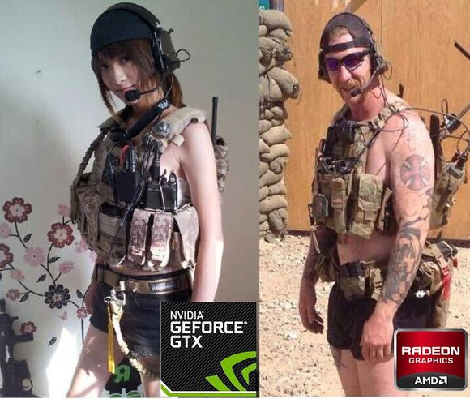
答案是——否定的
性能相同的A卡和N卡运行主流单机游戏的时候差距小于10%，所以不必去纠结A、N卡的问题。随着时代的发展，已经有很多A卡优化的游戏，例如孤岛危机3，杀手5，鬼泣5等等。可见游戏优化已经不是N卡的独家专利了。
A卡、N卡的大致意思是由AMD公司、Nvdia公司出品的游戏用显卡，名字取自两个公司名称的首字母，而显卡是游戏玩家必备的配置之一，不玩游戏的吧友不需要考虑高性能显卡。Intel的集成显卡已经足够。
如何快速判断显卡的性能的高低？
确定同档次的A、N卡其实很简单，利用显卡天梯图完全可以办到，当你在为A、N卡纠结时，可以通过天梯图来判定两张卡的好坏并作出合理的选择。
到底什么在影响着显卡对游戏优化？
答案是驱动，A、N两个公司在更新显卡驱动的时候一般都会注明此次驱动会修复在游戏里因为驱动造成的某个BUG，对XX游戏有多少提升
“同等档次下的A卡和N卡在双方驱动完善条件下运行主流单机游戏的时候差距不会高于10%”对于近期的出的游戏A、N都会放出驱动不断的优化使帧数提高。
而在以前因为AMD在驱动上面做的不好导致游戏优化水平不如N卡，但是近2年来随着AMD的不断改善驱动这种差距逐渐的在消失。
所以不管是A卡还是N卡用户不断的更新驱动是对游戏优化最重要的环节。
小白在更新的时候可以先在百度上搜索一下，因为有不少驱动是Beta版，可能会造成系统不稳定的现象，所以不妨看看大家的评论再考虑是否更新。
如何查找某款显卡在某款游戏里的具体帧数？
可能不少吧友依然觉得一张显卡天阶图过于虚幻，他们需要更加量化的测评以更准确的判断某款显卡的性能是否能满足自己的需求，例如我的显卡是否能在高效果下玩战地3？是否能在中等效果下流畅的玩孤岛危机3等等，这时一张天阶图明显就满足不了他们的需求了。
那这些数据去哪里找？
http://www.notebookcheck.net/Computer-Games-on-Laptop-Graphic-Cards.13849.0.html
这个这个网页里基本有每一款主流显卡在近期主流游戏里的测评，如果需要对比的话可以在需要对比的显卡上打勾，然后将页面拉倒追底端后点『Restrict』键即可，这样你就可以找到更直观的数据来判断某显卡的性能了。该网站的数据也是樱井在制作显卡天阶图时主要参考的数据。
注：该网页里主要体现的是某显卡在近期的单机游戏里的不同效果的帧数，网游基本没有（有部分显卡有WOW和WOT测评），尤其是日韩与国产网游，所以请试图查找某款显卡在网游里的数据，可以去各大论坛或者笔记本吧的测评区寻找。
如果主要用笔记本玩一些画质要求较高的网游，例如剑灵，坦克世界，剑网3等等，假如你是小白懒的折腾的话，个人建议是用N卡，这类游戏普遍对N卡优化，A卡玩可能会出现各种蛋疼问题，有的游戏则是和同等级N卡帧数差距很大，N卡在这方面是一种省心又省力的选择。
变形超极本能代替平板+笔记本吗？
-
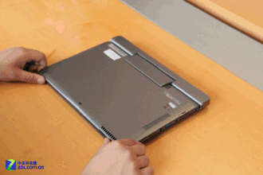
答案是——肯定的，但是！
变形超极本（后称变形本）虽然能在平板和笔记本中来回切换，但是13寸变形本重量相比ipad等主流平板来说还是略重，使用起来并没有Galaxy tab、nexus7、ipad等平板轻便好用。
变形超极本 是英特尔超极本战略中非常重要的组成部分，除了极致轻薄的普通超极本外，能够通过神奇的屏幕卡口变成平板电脑的变形本很有新意。
【变形本有什么特点？
模具整体做工用料较好，但是质量是否有保证并不好说。
屏幕因为是触屏所以屏幕质量都还不错。
最后就是这些本普遍隔热都不是很好，高负荷下热感明显，有风扇的变形本高转速下很吵。
变形本挺贵的，性能很强吗？
变形本性能都一般，较贵的变形本内置固态硬盘，开机速度和读写速度都很快，而低价位使用普通硬盘的变形本，性能不适合玩大型游戏，日常使用，休闲游戏、电影、微博等还是能够胜任
各个品牌的变形本变形方式都不同，哪个比较好？
仁者见仁智者见智。强烈建议所有考虑超极本的吧友都到实体店至少摸过一遍再考虑买不买变形本，如果变形方式不适合自己，买回来非常憋屈。
不要摸过超极本，喜欢后就冲动直接购买，一定要回家查好价格，推荐选择b2c网购
变形本在平板状态下，是不是变成触控版本的笔记本电脑了？
是的，可以参照surface pro，这就是一个平板型笔记本电脑，系统和普通电脑一致，这也是变形本的终极魅力所在，根本不需要付出多少换系统的学习成本，就会使用超极本平板了。
超极本有什么硬伤？
除了性能较差以外，超极本也没有其它安卓平板、ipad所具有的非常多的应用程序，没有很多好玩的休闲游戏，所以比较适合轻量级办公和网页浏览，并不能用来玩平板上游戏。而在平板中较重的重量也很大地影响了平板状态下使用的舒适程度。
大部分变形本具有主动式散热，要注意别堵住出风口。
此类笔记本总的都可以归类于超极本，虽然新意足，科技感极强，但是未免有点“超现代”，其销售量也很不好，市场前景不明朗，追求新奇的geek必须购买，但是追求实在的学生，还是推荐另购平板电脑，虽说预算可能略超，但是普通本+平板的组合从应用方面来说更加稳健，不失为一个明智的选择。
笔记本电池是电芯越多容电量越大吗？
-
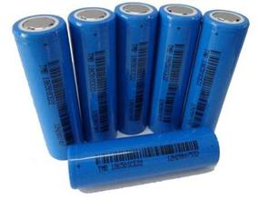
答案是肯定的。
一般人们所说的几电芯就是指电池内电芯的数量，mAh是指笔记本电池的容量。笔记本电池的待机时间主要由mAh值来决定。一般情况下，电芯数越多，mAh值越大，待机时间越长。
如何确定一个机器的电池容量其实很简单，去各大IT网站（例如ZOL，本友会等）搜索某款笔记本的型号，然后点击详细参数选项一般都可以看到该机器电池的电芯为多少。一般12寸-13寸笔记本采用4-6芯电池，14寸基本为6芯电池，15寸为6-9芯电池，17寸基本都为9芯电池，也有12芯电池电池的怪物。 请需要笔记本电池续航力的小白注意：以上提供的各种尺寸的电池电芯数参数都是我总结出来的，符合大部分机型，但是强烈建议在购机之前依然需要查询一下，以免买到同尺寸同性能下续航力差的笔记本，例如联想Z400系列没有用6芯电池而是坑爹的4芯电池，所以请需要电池续航力强的小白一定要查清楚后再购机！！！ PS:现在不少超级本和轻薄本由于追求机身的薄所以电池是不可拆卸的，关于这类笔记本厂家一般都会给出续航时间参考，晚上一般都能查到。
电芯到底是什么？电芯的质量和制造电芯的厂家有关系吗？
关于电芯到底是什么，我觉得放一张图能让各位有直接的认识，请看配图，那一块块像电池的东西就是电芯（简单的说电芯就是充电电池）
现在制造电池电芯的主要几个厂家有三洋，三星和一大批国内的厂商（太多了我就不列举了），大部分品牌厂商都使用的是三洋和三星的电芯，而做笔记本配件卖的笔记本电池很多都是国内厂商的电芯，看一个电芯的质量好坏主要看稳定性和可以充电/放电次数，国产电芯与三洋三星电芯在质量上有差距，但是差距并不是很明显，并且比三洋三星电芯便宜不少，所以如果各位的笔记本电池到了寿命需要更换时且手头较紧可考虑国产厂家的笔记本电池。
笔记本电池需要激活吗？
很多小白在购机完后表示JS经常会提醒要回去后要充电放电3次，每次充当要超过XX小时，这样才可以让电池激活，这是真的吗？
虽然已经说了很多次，但是在这里依然要重复一次，基本所有厂家都会在笔记本出厂前把电池激活，为了避免自然损耗影响电池效能，才会带有少量电能。由于笔记本电池在完成一次完全充电后就会自动停止工作，根本没有必要把充电时间保持到XX小时。新买的笔记本电脑只需按照正常充/放电方式进行激活即可。
如何在日常维护笔记本电池？
笔记本电池的日常维护其实也很容易，因为影响笔记本电池寿命的主要是电池电芯充电/放电的次数，所以尽量在有外接电源且环境与电源电压较稳（据我所知很多大学宿舍的电压不稳，这种情况下还是装着电池好）的时候卸下电池使用，每三个月进行一次电池电力校正（由于电池电力校正方法较多，我在这里就不赘述了，具体方法请自行百度）,如果用电池最好就用到5%以下，这是避免电池记忆效应的最好方法。
购买电脑时，验机重要吗？
-
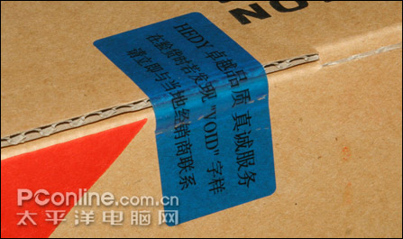
答案是——肯定的
验机非常非常非常重要，无论在哪儿买电脑，都切记要验机，这样才能防止买到样机和二手翻新机以及屏幕有问题的电脑。
验机主要依靠软件检测笔记本屏幕有没有坏点、硬盘使用时间等一系列参数，并不需要跑分和极限测试软件。
买电脑前一定要做好什么准备？
1、一定要事先确定自己要买电脑的具体型号并且上天猫事先查好价格，必须非常具体。
2、一定要坚定自己要买的型号，无论销售员怎么说，都不要买他说的电脑。
3、一定要带现金，别拉卡消费（出纠纷退钱更快）。
4、一定要先看机器，再交钱，切忌先交定金。
5、一定要拿到机器之后验机，验机无误后方可交钱走人。
做到以上五条一定之后，就算你对硬件只认识一个型号，也能够买到称心如意的电脑。
验机主要看机器的哪些参数？
硬盘使用时间——可以依靠它查看你的电脑是不是样品机。
屏幕坏点——可以当场检查笔记本屏幕是不是坏的，根据三包政策，3个亮点的机器可以直接换新。
具体配置——可以检验你的买机器是不是当初挑选好的配置。
一般验机需要下载那些程序呢？
CrystalDiskInfo——可以快速查看硬盘各项参数（包括使用时间，品牌）。
鲁大师——查看电脑具体配置时使用。
DisplayX——检查电脑屏幕有没有坏点。
验机有那些基本步骤？
1、上网下载上述程序。
2、保存在U盘等移动设备上。
3、开机后，插入移动设备开始验机。
如何判断验后电脑是否过关？
硬盘时间别超过30小时
电脑屏幕在包点情况下无亮点，不包点情况下3个亮点以内
电脑内部硬件经检测后和事先看到的硬件相同
验机之前尽量不要先交钱，如果你交钱了，主动权就落在商家手里了，到时候就算机器出现问题，解决起来也很困难。
如何把被坑几率降到最低？
不要去电脑城购买电脑，去京东网 易迅网 苏宁易购 卓越亚马逊 新蛋网等类似网站网购电脑是能把风险降到最低的唯一方式。当电脑城里的商家打算坑你，无论你准备有多充分，他都不会妥协，商家宁可拖你一天时间，也不肯以一个较低的价格卖你电脑。